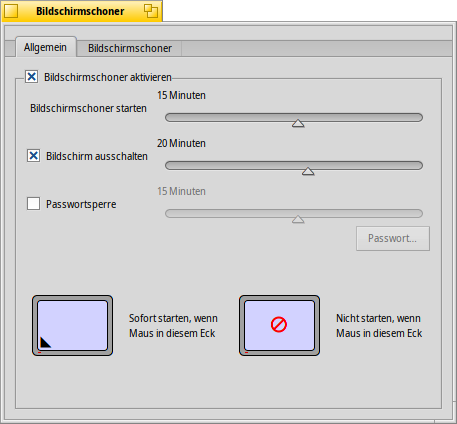
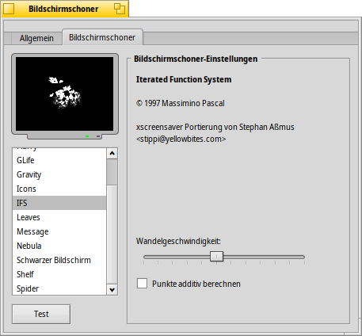

Deutsch
Deutsch Français
Français Italiano
Italiano Русский
Русский Español
Español Svenska
Svenska 日本語
日本語 Українська
Українська 中文 ［中文］
中文 ［中文］ Português
Português Suomi
Suomi Slovenčina
Slovenčina English
English Bildschirmschoner
Bildschirmschoner
| Deskbar: | ||
| Ort: | /boot/System/preferences/Bildschirmschoner | |
| Einstellungen: | ~/Konfiguration/settings/ScreenSaver_settings |
Das Fenster der Bildschirmschoner Einstellungen gliedert sich in zwei Reiter:
 Allgemein
Allgemein

Ganz oben wird der Bildschirmschoner aktiviert bzw. deaktiviert.
MIt dem Schieberegler darunter bestimmt man wie lange der Rechner ohne Benutzereingaben im Leerlauf verbringen darf, bis der Bildschirmschoner startet.
Die nächsten beiden Schieberegler müssen erst aktiviert werden, bevor sie benutzbar werden.
Mit dem einen kann festgelegt werden wann der Bildschirm ausgeschaltet wird.
Mit dem anderen, wann ein Passwort benötigt wird um den Computer freizuschalten.
Mit einem Klick in eine der Ecken des linken unteren Bildschirms kann dem System mitgeteilt werden, dass es den Bildschirmschoner sofort einschaltet wenn die Maus sich in der entsprechenden Ecke befindet. Im anderen Bildschirm wird die Ecke festgelegt in der der Bildschirmschoner geblockt wird. Um diese Funktion zu deaktivieren, genügt ein Klick in die Mitte des jeweiligen Bildschirms.
Bildschirmschoner

Der zweite Reiter zeigt eine Liste aller installierten Bildschirmschoner mit ihren jeweiligen Einstellungen. Mittels kann die aktuelle Einstellung getestet und per neue Bildschirmschoner hinzugefügt werden. Diese können auch einfach in die Liste hineingezogen werden, oder in den Ordner /boot/Allgemein/add-ons/Screen Savers/, beziehungsweise /boot/Benutzer/Konfiguration/add-ons/Screen Savers/ kopiert werden. Zum Unterschied zwischen diesen beiden Speicherorten siehe: Dateisystem Layout.